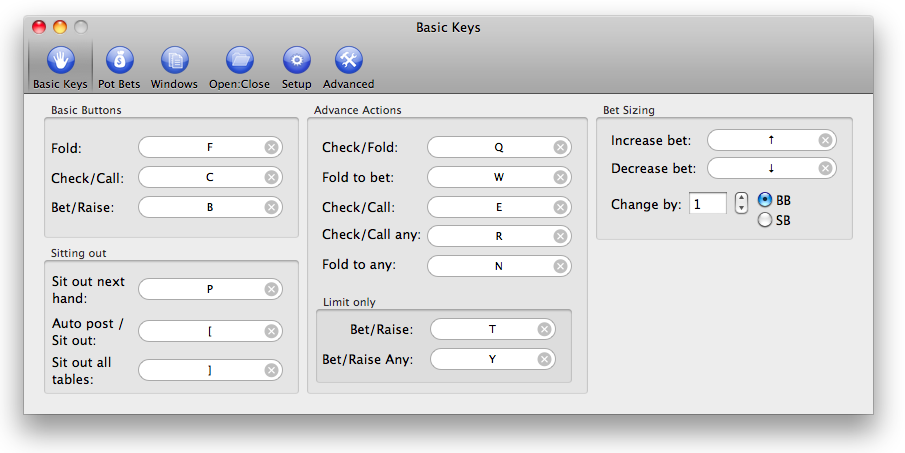

Setting up your hotkeys.
BlazingStars helps you control the PokerStars client by defining "hotkeys", which are specific keybaord combinations such as Ctrl-F or Cmd-Shift-J, to perform specific tasks in the poker window. These tasks include things like pressing the Fold, Call or Raise buttons, checking the advance action boxes, sitting out, and increasing or decreasing the size of your bet by a specified number of small or big blinds (SB / BB).

Hotkeys must be unique (each hotkey can perform only one task). BlazingStars will only fire the hotkeys when a poker window is active, so that errant key presses do not cause a problem in another application. You can also set a hotkey to turn off all other hotkeys, to avoid collisions with hotkeys defined in other programs (see Getting Set Up).